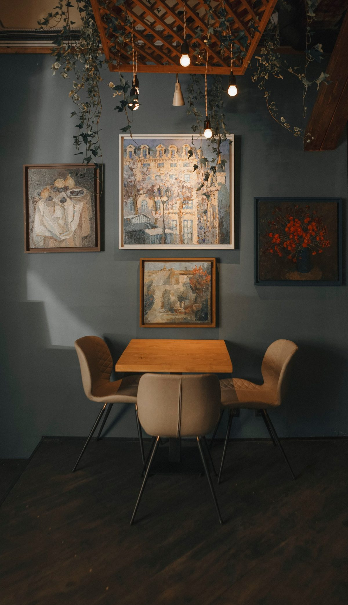

Свежесть
Каждый день — новые продукты от местных поставщиков. Паста приготовлена вручную, соусы томятся с утра.
Место, где хочется остаться подольше

Brio — это ответ на простой запрос: хочется по-настоящему хорошо поесть без ожидания, без лишнего шума, в красивом месте.
Мы верим, что обед в будний день может быть таким же приятным, как ужин в пятницу. Уютный интерьер, внимательный сервис и еда, которая поднимает настроение.
Каждый день — новые продукты от местных поставщиков. Паста приготовлена вручную, соусы томятся с утра.
Рецепты из Тосканы, Лигурии и Сицилии — собранные поколениями, бережно воссозданные в каждом блюде.
Тихое место для разговора, уютный свет, итальянская музыка. Здесь время течёт иначе.